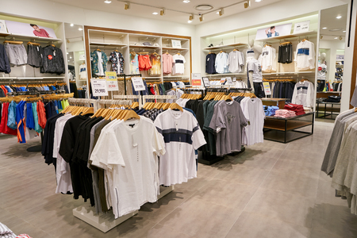

About Trendy Threads:

Our Story
First named House of Fashion , was a local home business founded by Usamah Cassim.As the name spread the business grew and expanded , Usamah later changed the name to "Trendy Threads ".It all started in 2016 when Usamah bought clothing and marketed it for other businesses , this inspired him to design his own clothing. The small business was well known and appreciated in in the local town due to its excellent quality. The business became successful and Usamah began selling his products to larger clothing stores such as Woolworths , Mr Price and many others.The unique style ,design and fabrics of Trendy Threads lead the business to growing larger and larger as Usamah continues to study the trends of clothing today
Our goal

"Fashion is a cycle, but not knwoing when the next turn will happen, so take hold and style up now". Trendy Threads brings you a variety of clothing. We aim at moving with the cycle of fashion and staying one step ahead of others to ensure our customers wear the best before the best is even out. We look at everyone and people who are looking at diverse styles, so we brought it upon ourselves to make it possible for people of all fashion types to find what they looking for at Trendy Threads.
Accomplishments
Thanks to the support of the team, Trendy Threads now has a partnership with Nike clothing and Nike sports